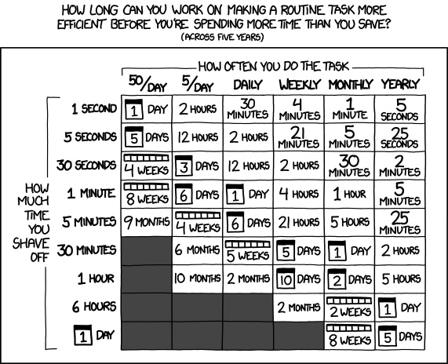
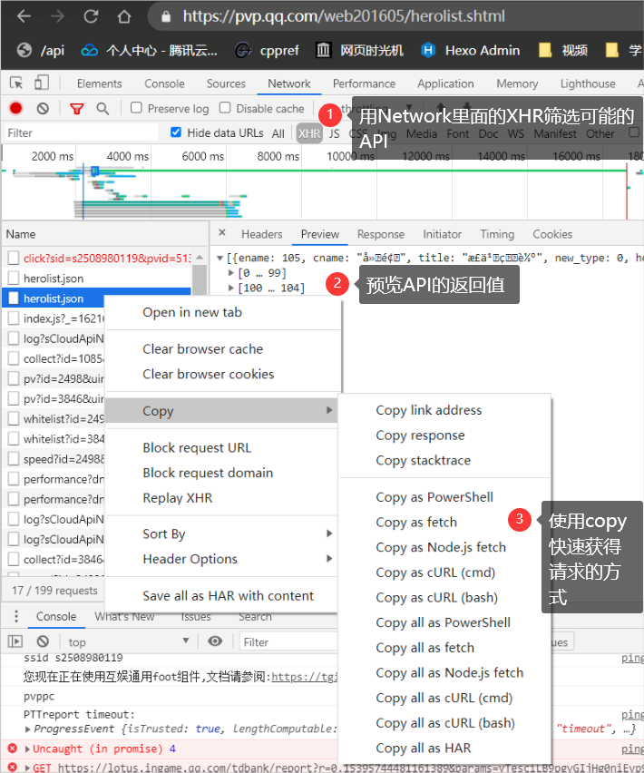
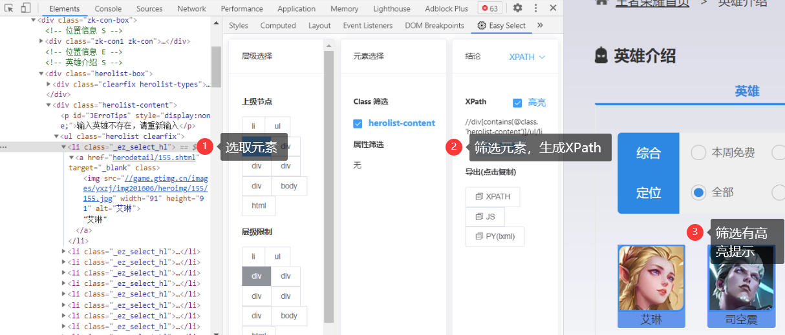

太长不读
- 能不爬，就不爬。最省力的方法是不爬，然后才是用工具爬。
- 爬取要讲道德：遵守 robots.txt, 频率不能太高，不能爬法律不允许的东西，把网站爬挂了，或是法律上出了问题，可能还是程序员背锅。公开 API 如需要授权，先去试着联系下合作。
豆瓣的图书评分，是国内图书评价体系最好的。几家电商网站，自己也做图书评价体系，做得乱七八糟，尤其是京东，为什么不直接和豆瓣合作一下呢？调用豆瓣 API 就行了啊。但中国互联网公司之间，是没有 API 的，中国互联网行业通行的 API 其实是爬虫。
– 豆瓣是中国互联网的骄傲
第一次和阿北认识是在十几年前的上海，当时和Mtime的马锐拉三个人约在徐家汇的一个星巴克里，商量如何把豆瓣、VeryCD、Mtime的电影资料用开放协议打通。
那是Web2.0的黄金年代，大家都认为开放是理所应当的，各网站各司其职拼凑起一个更丰富的互联网。无需登录注册的API、RSS、XML导出都是当年的标配。
– @DashHuang
前言
出于兴趣或各种目的，我在网上抓取过各种不同的数据，还做过一个半成品级别的增量爬虫框架。这个文章系列里，我会描述一下我见到过的网络数据抓取的生态，如语言，工具，SaaS 服务，网站反爬等。
这篇文章从我很久前做过的一个小例子出发，描述网络数据抓取的任务，可供选择的技术栈和我使用的工作流。在下文里，爬虫和网络数据抓取工具是同义词。
例子
需求描述
需要得到王者荣耀所有英雄的名字。
描述看上去过于简单，但很多时候，一开始就定下获取所有 X 网页里面的 Y 元素可能会让你忘记你的真实目的是获取信息而不是为了写抓取脚本而写抓取脚本。有时候最快的方法是人力。如果不需要结构化数据，也许花一点时间人肉登记更快。

为了增加例子真实度，再加入一点需求：
需要得到王者荣耀所有英雄的名字，和他们的资料。
找到信息源
现实情况1
如果确实需要自己获取这种数据，此时，先找到最权威的数据源。在这个例子里，最权威的是官方网站里的英雄列表。
现实中，该页面调用的一个 API 返回了所需信息的 JSON 。虽然我不知道这点，但我会使用下图的方法，利用 Chrome 的开发者工具，快速定位信息源。

到这里，如果有了足够你需要的足够信息。基本上寻找信息源的这一步就结束了。
虚构情况1
在前后端分离火起来之前，一门语言适合做 Web 和适合渲染 HTML 几乎是等价的，毕竟大部分网站都用的是服务端渲染的技术。而到了今天，许多网站又开始通过使用 SSR 或 SSG 来增强 SEO 或是更好的利用 CDN，减轻客户端负担。
在以上的两种情况里，客户端只能看到一个 HTML 页面。如果要获取 HTML 上的元素，有两种定位的语言：
- XPath
- CSS 选择器
XPath 的优点是除了表达元素本身外，还可以提取出元素的属性或是用函数增强表达力。
CSS 选择器的优点是更加接近生产环境,这从 jQuery 和 document.querySelector 都使用CSS选择器就能看出。
这两种语言理论上我们也可以使用 Chrome 开发者自带的 copy selector/XPath 来获取，但我想推荐一款工具：Easy Select:

这款工具生成的 Selector 和 XPath 比起 Chrome 生成的质量上要好上不少。几乎不需要再人工微调。
虚构情况2
除了返回 JSON 格式的 API，以下种类的 API 我也遇到过：
- 返回 JSONP 的 API
- 返回一整段 HTML/XML 的 API
- 使用 WebSocket 来与服务器通信
- 加密后的信息交换
使用开发者工具来人肉试验和筛选这些信息源，基本是唯一的办法。
从信息源获取信息
从信息源获取信息，本质上是模仿人使用浏览器进行网络请求。模仿程度从低到高如下：
- 能使用相同的协议通信。
- 能执行相同的行为，如自动保存Cookie，自动重定向等等。
- 能执行浏览器脚本，如页面上的Javascript。
- 无头浏览器。
- 受脚本控制的真实环境浏览器。
如 cURL(sh/psh), http/superagent/axios(Node.js), urllib/requests(Python)等 HTTP 工具，基本都可以达到模仿程度2。一般来说，大部分的反爬也只需要你达到程度2的水平。
jsDOM(Node.js)达到了程度3，是 React 官方推荐的浏览器测试环境。如果开了CloudFlare 的浏览器检测功能，则需要至少达到这个程度。
Selenium，PhatomJS 达到了程度4。一般这时候除了没有显示，已经与真实浏览器无异。
我没有过需要程度5的情况，所以就不多说了。
现实情况
在这个小例子里面，你使用的工具只需要达到程度 1 就可以完成任务。
获得了英雄列表之后，再调用详情页中使用的API，就能获得英雄全部信息。
虚拟情况
如果有对于 IP 访问频率的限制，要么降低频率，要么使用IP池。
如果有对于登录的限制，则应该使用用户代理池。
Scrapy 这个框架，几乎能够满足模仿程度 2 以内所有的需求，比如在这个例子里，Scrapy 可以横向爬取英雄列表，再纵向进入英雄详情页抓取所有信息。
如果需要执行浏览器脚本，至少要使用模仿程度 3 以上的技术。
如果有验证码需求，则应该接入验证码管理，如自动打码平台等。
有的时候，众包是成本最低的方式。
总结
第一个步骤，描述需求，一定需要人工完成。
第二个步骤，找到信息源，一定要由人工完成。
第三个步骤，从信息源获取信息，我以为一般都要用人工完成，但是最近我使用了 Zyte 提供的 API 之后我发现现代的智能爬虫已经可以能够自动将信息结构化，后面的文章我也会用例子讲解。
结束语
上文稍微描述了一下爬虫的相关技术栈和我的工作流。
之后几篇文章可能会围绕这两个主题:
- 进阶：横向爬取和纵向爬取
- 使用 SaaS 工具 Zyte.
转载请注明来源，欢迎对文章中的引用来源进行考证，欢迎指出任何有错误或不够清晰的表达。可以邮件至 emon100@qq.com